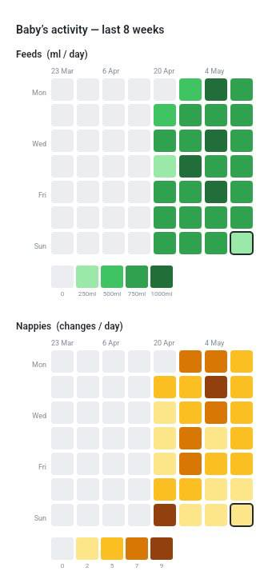
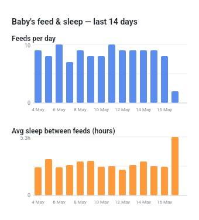
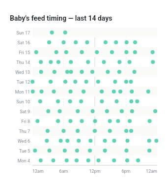
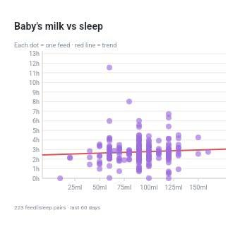

A Telegram bot designed for sleep-deprived parents. Log at 3am with one hand, get reminders before you forget, and understand your baby's patterns — all without leaving Telegram.
No app download · Works on any phone · Open source
You've both been up for hours. Your partner thinks it was an hour ago. You think it was two. You're too tired to scroll back through WhatsApp messages. Nanny Bot gives you one place, one tap, and a feed history that's always right — shared between both parents in real time.
Every feature exists because a tired parent needed it at an inconvenient hour.
Pick the ml (90 / 100 / 110 / 120 or type any amount) and when it happened. Done in under 5 seconds — one hand on the baby the whole time.
A prep nudge at 2h 30min, then a feed reminder at 3h — with the exact ml from the last feed. Never wonder whether it's time again.
One code links both phones to the same data. Either parent can log — the other sees it instantly. No more "I thought you did it."
Wet, dirty, or both — logged in the same two taps as a feed. Track nappy frequency alongside feeds so your paediatrician has the full picture.
Every feed and nappy change for any day, with totals and timestamps. Navigate backwards day by day with ◀ ▶ buttons.
Tap Delete, pick the entry, confirm. Tired fingers make mistakes — nothing is permanent until you're satisfied.
Generated inside Telegram — no app switching. Tap a trend, get a chart in seconds.

GitHub-style activity grid showing daily feed volume (ml) and nappy frequency over 8 weeks. Spot the days your routine changed, and track recovery after illness or a growth spurt.

Two-panel bar chart tracking feeds per day alongside average sleep gap between feeds. See whether bigger feeding days genuinely lead to better rest — or if it's just luck.

Each row is a day, each dot is a feed plotted at its time of day. When the dots start lining up vertically — that's your baby's schedule forming. One of the most satisfying charts you'll ever see.

Scatter plot of every feed vs the sleep that followed, with a trend line. It's the question every parent asks at 2am — now you have actual data to answer it.
No accounts, no passwords, no app download. Just Telegram — which you're already using.
Search for Nanny Bot on Telegram or tap the link below. Hit /start and enter your baby's name. That's it — you're registered.
Tap "Fed now", pick the ml, confirm the time. Your partner gets the same view the moment you log it — no sync required.
After a few days, open Trends. The charts tell you whether a routine is forming, which volumes lead to longer sleep, and how each week compares.
Every feature is one command away. Or use the quick-action buttons so you never have to remember them.
/share in your chat — the bot replies with a one-time link code. Your partner sends /join <code> in their own chat with the bot. From that point on, every log either of you makes is shared and visible to both of you instantly.